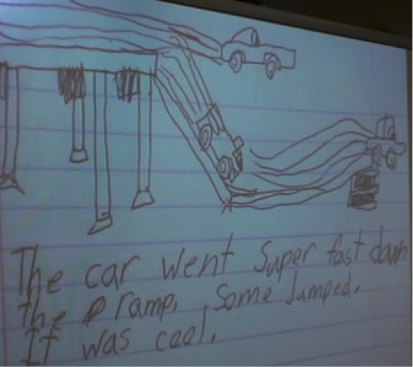
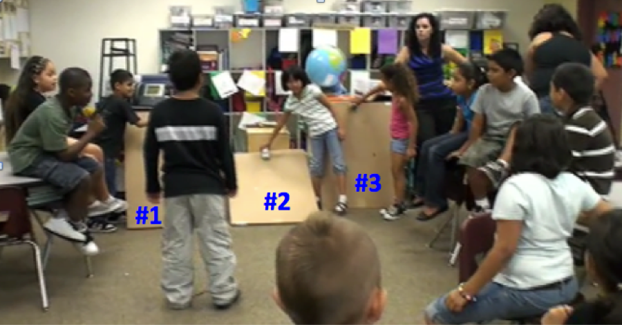
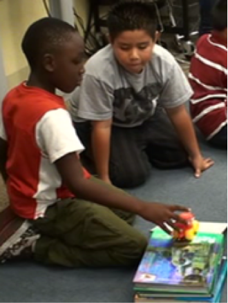
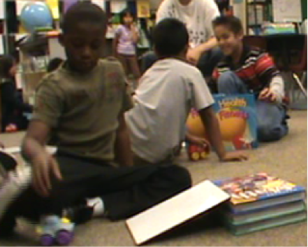
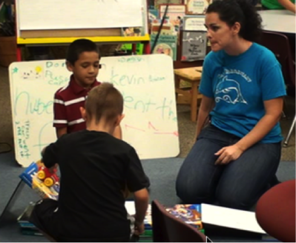
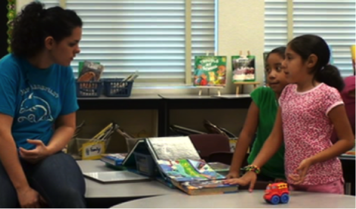

 Day 7 was devoted entirely to ramps and it was most interesting! At first Sharon projected some of the kids' ideas about ramps up on the screen.
Sharon then asked Fabian, the student who drew the picture, how he would know which of two cars going down his ramp would be the fastest. He said that the one that got to the end first would be the fastest. Students asked several follow-up questions. There seemed to be a debate about how the steepness of the ramp would affect the car's speed.
Video Clip 1
Sharon then drew two ramps on poster paper at the front. One ramp was very steep and the other was much less steep. She had the class vote on which one would allow the car to go fastest. The class was equally divided, 11 for one and 12 for the other, and Sharon suggested that they might want to try it out.
Video Clip 2
Sharon then asked how they would know which car was the fastest. Students contributed their ideas.
Video Clip 3
Then she had the kids, as a whole class, set up and do the experiment. There were actually three ramps: ramp #1 was steep; ramp #2 was much less steep; ramp #3 was very, very steep (not quite vertical, but close).

As the kids were setting up three ramps, there was a debate about whether the car would go faster down the shallowest ramp (#2) or the steepest ramp (#3).
Video Clip 4
There were several trials. The cars that went down ramps #1 and #3 crashed at the bottom and rolled over. The car that went down ramp #2 rolled a long distance on the rug after leaving the ramp. Some kids took that as evidence that the shallower the ramp, the faster the car went, but Fabian disagreed. However, he wasn't sure, so the experiment was repeated. In the end he said that the car that went down the shallowest ramp (#2) was the fastest.
Video Clip 5
In the end, there was no universal agreement on which car was fastest, so Sharon suggested that students write down what they thought.
Video Clip 6
Sharon then circulated around the room, working with the various groups. One group thought the car that went down the shallowest ramp (#2) was the fastest because it went the furthest.
Video Clip 7
 On Day 8, Sharon began the class by polling students (again) about which ramp the car went down the fastest. Almost everyone now thought that the car went fastest down the shallowest ramp (#2). Kirven gave a reason for why he thought that. He said the ramp #2 was best because it was lower, so "the car gains up speed," while the others were too tall like a mountain, and it would just fall off (relating to a person who would just fall off the mountain).
Sharon asked Kirven what he meant that on ramp #2 the car would gain its speed. Kirven said that if you put two cardboard ramps together (longer ramp, but same height), then the car would go even faster. After some furthering questioning from Sharon, Kirven said that car on ramp #2 went farther because the ramp was lower. He said if it was too tall (too steep) the car would fall off. He also said that if the ramp was longer, the car would have more time to get speed.
Sharon then suggested the kids go experiment, but this time make some mini-ramps, using textbooks to hold up the small whiteboards. They could use between 0 and 6 textbooks (to make the ramps different heights). Each person and his/her partner could build just one ramp. They could get together with another group if they wanted to race their cars. Sharon then asked the students go over the rules again, and the kids broke up into pairs and went around the room to begin their experimentation. Sharon circulated around the room, asking each group questions about their setup.
|  |  |